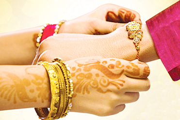

Raksha Bandhan, also Rakshabandhan,[4] is a popular, traditionally Hindu, annual rite, or ceremony, which is central to a festival of the same name, celebrated in South Asia, and among people around the world influenced by Hindu culture. On this day, sisters of all ages tie a talisman, or amulet, called the rakhi, around the wrists of their brothers, symbolically protecting them, receiving a gift in return, and traditionally investing the brothers with a share of the responsibility of their potential care.[3] Raksha Bandhan is observed on the last day of the Hindu lunar calendar month of Shraavana, which typically falls in August. The expression "Raksha Bandhan," Sanskrit, literally, "the bond of protection, obligation, or care," is now principally applied to this ritual. Until the mid-20th-century, the expression was more commonly applied to a similar ritual, also held on the same day, with precedence in ancient Hindu texts, in which a domestic priest ties amulets, charms, or threads on the wrists of his patrons, or changes their sacred thread, and receives gifts of money;. |
Of special significance to married women, Raksha Bandhan is rooted in the practice of territorial or village exogamy, in which a bride marries out of her natal village or town, and her parents, by custom, do not visit her in her married home.[10] In rural north India, where village exogamy is strongly prevalent, large numbers of married Hindu women travel back to their parents' homes every year for the ceremony.[11][12] Their brothers, who typically live with the parents or nearby, sometimes travel to their sisters' married home to escort them back. Many younger married women arrive a few weeks earlier at their natal homes and stay until the ceremony.[13] The brothers serve as lifelong intermediaries between their sisters' married and parental homes,[14] as well as potential stewards of their security. |  |
In urban India, where families are increasingly nuclear, the festival has become more symbolic, but continues to be highly popular. The rituals associated with this festival have spread beyond their traditional regions and have been transformed through technology and migration,[15] the movies,[16] social interaction,[17] and promotion by politicized Hinduism,[18][19] as well as by the nation state.[20] Among women and men who are not blood relatives, there is also a transformed tradition of voluntary kin relations, achieved through the tying of rakhi amulets, which have cut across caste and class lines,[21] and Hindu and Muslim divisions.[22] In some communities or contexts, other figures, such as a matriarch, or a person in authority, can be included in the ceremony in ritual acknowledgement of their benefaction. |